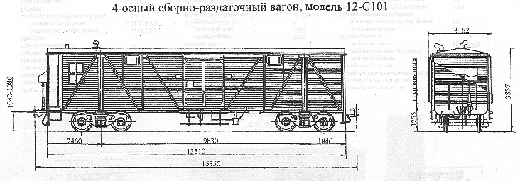

Назначение: сборно-раздаточный вагон
Параметры
| Номер проекта | |
| Технические условия | |
| Модель вагона | 12-С101 |
| Тип вагона | 919 |
| Изготовитель | АВЗ |
| Грузоподъемность, т | 16 |
| Масса тары вагона, т | 24,9 |
| Нагрузка: статическая осевая, кН(тс) |
100,25(10,23) |
| погонная, кН/м(тс/м) | 26,46(2,7) |
| Скорость конструкционная, км/ч | 120 |
| Габарит | 0-ВМ(01-Т) |
| База вагона, мм | 9830 |
| Длина, мм: по осям сцепления автосцепок |
15350 |
| по концевым балкам рамы (длина рамы) | 13510 |
| Ширина максимальная, мм | 3162 |
| Высота от уровня верха головок рельсов, мм: максимальная |
3837 |
| до уровня пола | 1255 |
| Количество осей, шт. | 4 |
| Модель 2-осной тележки | 18-100 |
| Наличие переходной площадки | есть |
| Тоже с ручным тормозом | есть |
| Наличие стояночного тормоза | нет |
| Длина кузова внутри, мм | 9830 |
| Ширина кузова внутри, мм | 2750 |
| Высота кузова по боковой стене, мм | 2431 |
| Размеры в свету, мм: дверного проема |
1830х2133 |
| загрузолного люка в боковой стене | |
| загрузолного люка в крыше | |
| Объем кузова, м³: до уровня люков |
|
| полный с учетом объема крыши | 90 |
| Год постановки на серийное производство | |
| Возможность установки буферов | нет |